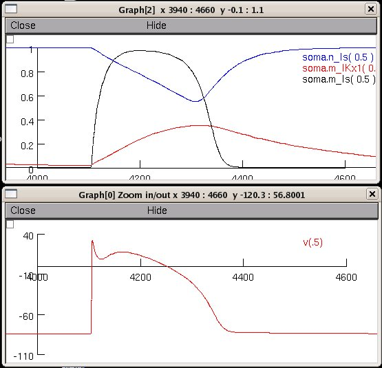

This is an implementation by Francois Gannier of the model associated with the paper: Beeler GW, Reuter H (1977) Reconstruction of the action potential of ventricular myocardial fibres. J Physiol 268:177-210 To run the simulation auto-launch the model from modeldb or download and extract the archive and then compile the mod files under: unix/linux: ----------- type nrnivmodl in the beelerReuter folder and then nrngui mosinit.hoc mswin: ------ run mknrndll and then double click on mosinit.hoc MAC OS X: -------- Drag and drop the beelerReuter folder onto the mknrndll icon. Drag and drop the mosinit.hoc file onto the nrngui icon. Once the simulation starts it recreates a figure similar to Fig. 6 A, B: 